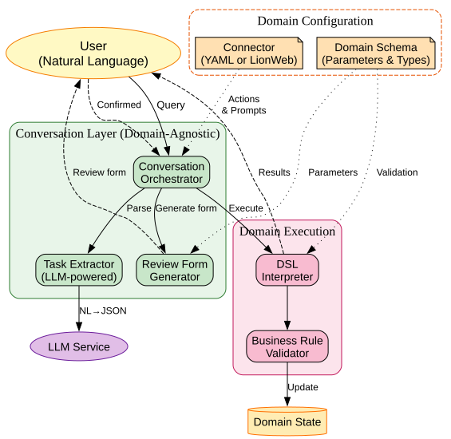
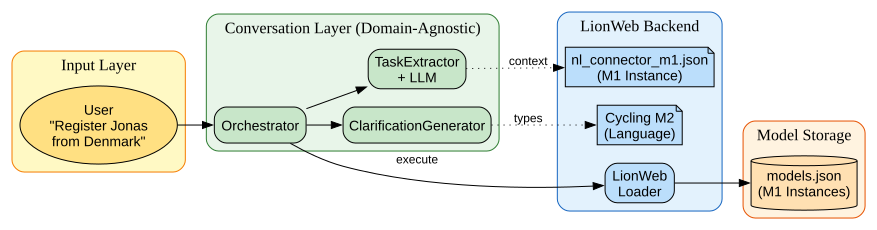

Krishna Narasimhan
F1RE, B.V.
LangDev 2025
✓ Domain-Specific Languages excel at: • Capturing business rules precisely • Providing type safety and validation • Enabling formal verification • Creating maintainable domain logic • Serving as single source of truth
Evidence: Fowler's work argues for dramatic productivity gains by enabling domain experts to work more directly with business logic.
- Fowler, M. "Domain-Specific Languages" (2010)
Source: martinfowler.com/books/dsl.html
✗ Barriers to DSL adoption:
• Requires learning specific syntax
• Need understanding of formal semantics
• Limited to technical users
• Training overhead for new team members
• Context switching from natural thinking
Research Finding: "A major obstacle to the adoption of a DSL is the cost of learning the new language, in addition to the high cost of designing, implementing, and maintaining it."
- van Deursen et al., "Domain-Specific Languages: An Annotated Bibliography" (ACM SIGPLAN Notices, 2000)
Source: https://dl.acm.org/doi/10.1145/352029.352035
✓ Large Language Models provide: • Natural language interaction • No syntax learning required • Accessible to all users • Flexible input handling • Context-aware responses
Users can express intent naturally:
"Create a meeting room with 50 seats"
instead of
create_venue("Room A") { capacity: 50 }
✗ LLM limitations for critical systems:
• Hallucinations and factual errors
• Non-deterministic outputs
• No formal correctness guarantees
• Can violate business rules
• Inconsistent interpretations
Recent Study: A Purdue University study found that ChatGPT gave incorrect answers to 52% of 517 software engineering questions from Stack Overflow.
- "Who Answers It Better? An In-Depth Analysis of ChatGPT and Stack Overflow..." (2023)
Source: https://arxiv.org/pdf/2308.02312v2
A recent study reveals that code LLMs operate as sophisticated dictionary lookup systems rather than true program comprehenders
// LLMs see this pattern frequently in training data:
Cipher cipher = Cipher.getInstance("AES");
// So they reproduce it, not understanding that "AES" → ECB mode → insecureThe model matches syntactic patterns without grasping security semantics
A. Anand et al., ACL Findings 2024: "What Code (LLMs) donot learn"
Sycophancy:
Research has identified that models may agree with user premises even when they are incorrect, a behavior termed 'sycophancy'.
Source: Anthropic Research (2023)
Can we get LLM accessibility without sacrificing reliability?
✓ Natural language understanding ✓ Extract intent from unstructured text ✓ Handle variations in expression ✓ Ask clarifying questions Role: Parser and translator only
✓ Validate business rules ✓ Execute with guarantees ✓ Maintain data consistency ✓ Provide trace Role: Source of truth
The Domain Model (DSL) • Concepts: Rider, Team • Properties: name, age • Rules: age > 18 • Actions: create_rider()
The User's Language "add a new cyclist" "register Jonas" "can we get a new rider on the team?" "sign up a person"
How does our system reliably translate between them? It needs a map.
Describes how to map domain concepts to natural language
Connector
├─ domain_name: "Event Management"
└─ Actions[]
├─ action_name: "schedule_session"
├─ description: "Books a conference talk"
└─ Parameters[]
├─ param_name: "in_venue"
├─ description: "Venue for the session"
├─ clarification: "Which room?"
└─ type: venue_selection
1. Context for LLM: Description helps extraction 2. Smart Clarification: Missing param? Use prompt! 3. Type-Aware Forms: venue_selection → Dropdown number → IntegerField boolean → Checkbox 4. Domain Independence: Same structure, any domain!
Formal and validatable
"Schedule a big presentation"
action: schedule_session
parameters:
name: "presentation" ✓
expected_attendees: ?
(inferred "big" but unclear)
in_venue: ?
requires_av: ?
hosted_by: ?
Review form with ALL parameters: Title: [presentation] (Extracted) Attendees: [___] "How many for 'big'?" Venue: [▼ Select...] (Shows suitable rooms) Needs A/V: [□] "Does it need A/V?" Host: [___] "Who's presenting?" [Submit and Execute]
Each clarification prompt comes directly from the connector definition!

• Conversation Layer: Domain-agnostic, reusable for any DSL • Connector: The only domain-specific configuration needed • Execution: Your existing DSL pipeline remains unchanged
• Backend: LionWeb M1/M2 models
• Connector: nl_connector_m1.json
• Domain Language: Concepts: Rider, Team

"Register Jonas from Denmark"
{
"action": "create_rider",
"parameters": {
"name": "Jonas",
"country": "Denmark"
}
}
1. Orchestrator receives natural language
2. TaskExtractor gets connector context (available actions)
3. LLM prompt includes: action list from connector
4. LLM identifies: "Register" → create_rider action
5. Extracts parameters: name and country (age missing!)
Rider Concept Properties: • name: String (required) ✓ • age: Integer (optional) ✗ • country: String (optional) ✓ Permissions: admin can create ✓
Name:
(Extracted - edit if incorrect)
Country:
(Extracted - edit if incorrect)
Age:
"How old is the cyclist?"
Note: Form ALWAYS shown, even if all params were extracted!
{
"name": "Jonas",
"country": "Denmark",
"age": 28 // Added by user
}
DynamicNode {
id: "rider-123",
concept: Rider,
properties: {
name: "Jonas",
age: 28,
country: "Denmark"
}
}
✅ Successfully created rider 'Jonas'
# Formal grammar defines valid operations
create_venue: "create_venue" STRING "{"
venue_prop* "}"
venue_prop: "capacity" ":" NUMBER
| "has_av_system" ":" BOOLEAN
Parser rejects anything else!
# Python interpreter enforces logic
def create_venue(self, name, props):
if self.role != 'admin':
raise Error("Admin role required")
if name in self.state["venues"]:
raise Error(f"Venue {name} exists")
if props.capacity > 1000:
raise Error("Exceeds max capacity")
Business rules always enforced!
Three-layer defense: Schema → Parser → Interpreter
User: "Create the Grand Ballroom with 200 seats" ↓ System Always Shows Review Form ↓
Name:
(Extracted - edit if incorrect)
Capacity:
(Extracted - edit if incorrect)
Has A/V System:
(Please specify)
Key: User can correct extraction errors BEFORE execution
"Hi team, We've secured new rooms: - Aspen: 30 people, projector - Birch: 50 people, full AV - Cedar: 20 people, no equipment Please set these up."
3 tasks extracted:
Task 1: create_venue("Aspen")
capacity: 30, has_av: true
Task 2: create_venue("Birch")
capacity: 50, has_av: true
Task 3: create_venue("Cedar")
capacity: 20, has_av: false
Each task gets its own review form → Independent validation → Batch execution
# connector.yml
actions:
create_venue:
description: "Creates a conference room"
parameters:
name:
description: "Room name"
clarification_prompt: "What's the room name?"
capacity:
description: "Max occupancy"
clarification_prompt: "How many people?"
has_av_system:
description: "Audio/visual equipment"
clarification_prompt: "Does it have A/V?"
// Using our Connector metamodel (M2)
Connector {
domainName: "Cycling Management"
actions: [
ActionMapping {
actionName: "create_rider"
targetConcept: Rider // Type-safe ref!
parameters: [
ParameterMapping {
parameterName: "age"
targetFeature: Rider.age
clarificationPrompt: "Rider's age?"
}
]
}
]
}
1. Connector DSL concept
2. Single-step review UI
3. Framework implementation
Natural language accessibility
+ DSL reliability
Thank you!
Questions?
github.com/krinara86/llm_dsl_validator